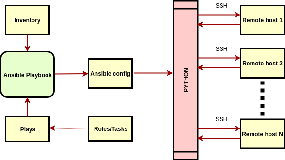

This section will provide with the minimum theory required to work with Ansible.
There are two main modes in which Ansible can be run: ad-hoc mode and playbook mode. We will make more emphasis in the playbook mode.
Drawn on a diagram, the architecture of Ansible running in playbook-mode would look similar to the following:

Following the example provided in the documentation, the directory structure of an ansible project can be as follows:
site.yml
webservers.yml
fooservers.yml
roles/
common/
tasks/
handlers/
files/
templates/
vars/
defaults/
meta/
webservers/
tasks/
defaults/
meta/
Is where the list of hosts that can be targeted live.
Important
It can have a list of IPs, hostnames, a combination of both, and much more. This will be covered more in depth in the inventory section.
It’s either a .yml or .yaml file that contains one or more plays. On the list above, the files site.yml, webserver.yml, and fooservers.yml are playbooks.
Can contain one or more tasks, and one or more roles.
Contain a set of grouped tasks that can be reused in many plays. On the list above the roles presented are: common and webservers.
Focusing on the roles directory for a moment, let’s point out some things:
The minimum set of directories that you need for an Ansible role, using the role common as an example, is:
roles
└── common
└── tasks
└── main.yml
2 directories, 1 file
The file tasks/main.yml will be the entry point for the role.
Note
Any role must have at least a tasks/main.yml file.
I usually start filling up this main.yml file and then create all other files/directories when necessary (for example, in this case if I needed a template I’d create a common/templates/ directory and place it there).
Important
Why use this directory structure on the roles and not something else?
The Ansible modules will typically assume this directory structure convention to find the resources, therefore chances are you’ll get an error if a resource cannot be accessed because of a different directory structure.
These are the minimum unit of work in Ansible. Ultimately everything is broken down into a set of tasks. A task normally includes a module.
The tasks can be normally placed in two places:
ROLENAME/tasks/main.yml)tasks)Note
ROLENAME is just a placeholder, it makes reference to the name of the role.
Serves as a way to perform one-off tasks against a group of hosts. Examples: install a apt package on a certain group of hosts.
This can be very useful to debug simple cases such as connectivity among hosts, or even printing the Ansible variables a remote host has available.
The important thing to remember is that any module that is covered in the documentation, can be used as an ad hoc command. This will be covered later in the course.